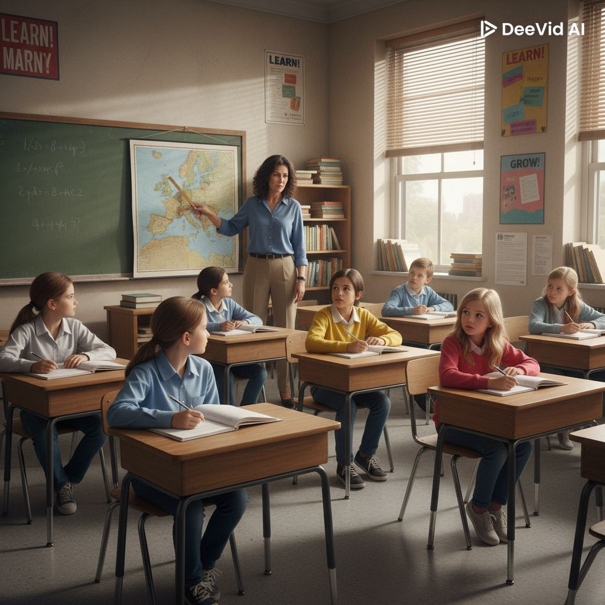

La Resistencia al Cambio desde la Biografía Escolar y el Habitus Profesional
¿Por qué los docentes, aun con libertad de cátedra, reproducen las mismas prácticas tradicionales?

Historia personal como estudiante que condiciona la práctica docente
Disposiciones internalizadas que guían la acción pedagógica
El docente, al tener un amplio margen de adaptación en el Nivel Áulico, tiende a reproducir los modelos y esquemas adquiridos en su propia historia (su biografía escolar), lo que le impide adoptar las metodologías innovadoras propuestas por el currículum.
El currículum propone la pedagogía del Taller (participativa, construcción colectiva), pero el docente reproduce la clase magistral expositiva que experimentó como alumno.
El habitus profesional es el sistema de disposiciones durables que guía la acción docente, adquirido a través de la socialización y la experiencia.
Se construye lentamente y resiste al cambio
Opera automáticamente sin reflexión previa
Organiza la percepción y la acción docente
Anijovich y Alliaud: Dispositivo reflexivo para tomar conciencia de la propia biografía escolar.
El docente en formación reconstruye narrativamente su historia como estudiante para identificar qué experiencias configuran su habitus.
Reconocer cómo las propias experiencias escolares limitan la apertura a la innovación curricular.
Si yo aprendí con clases magistrales, ¿por qué cambiar algo que funcionó?
Usar ese margen no para reproducir, sino para experimentar con metodologías alternativas propuestas por el currículum.
La reflexión consciente sobre la biografía escolar permite transformar el habitus de un obstáculo en una oportunidad para la innovación pedagógica fundamentada.
Conflicto entre la calificación numérica rígida (regla institucional) y la naturaleza cualitativa y gradual del aprendizaje.
El docente debe poner una nota del 1 al 10, pero el aprendizaje no es lineal ni cuantificable de esa manera.
La Reflexión en la Acción (Schön) como herramienta para ejercer el margen profesional de manera fundamentada.
El docente reflexiona durante su práctica para adaptar creativamente las prescripciones institucionales a la realidad del aula.
El obstáculo subjetivo (habitus) se supera mediante la reflexión consciente sobre la propia biografía escolar, permitiendo al docente usar su margen de actuación para innovar en lugar de reproducir.